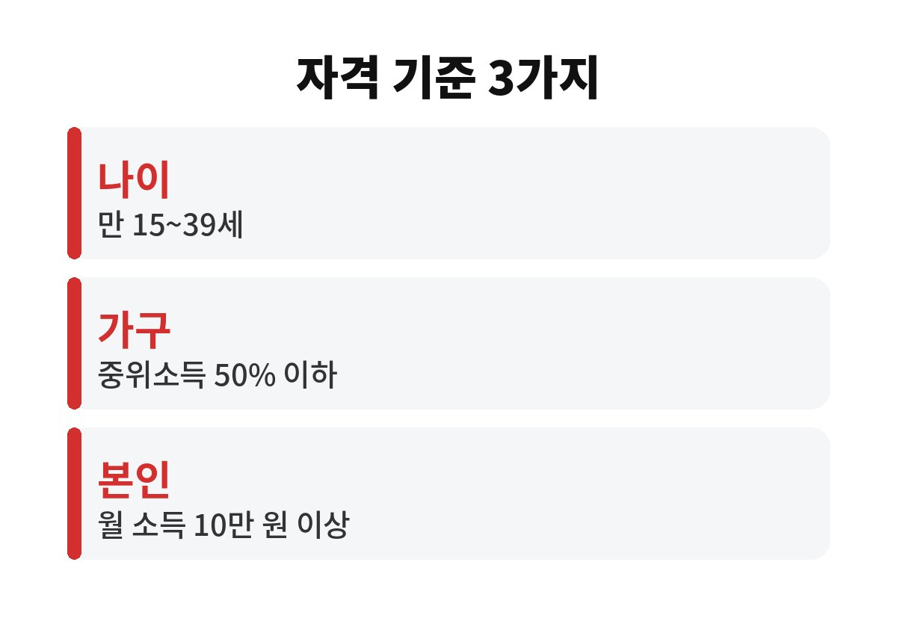
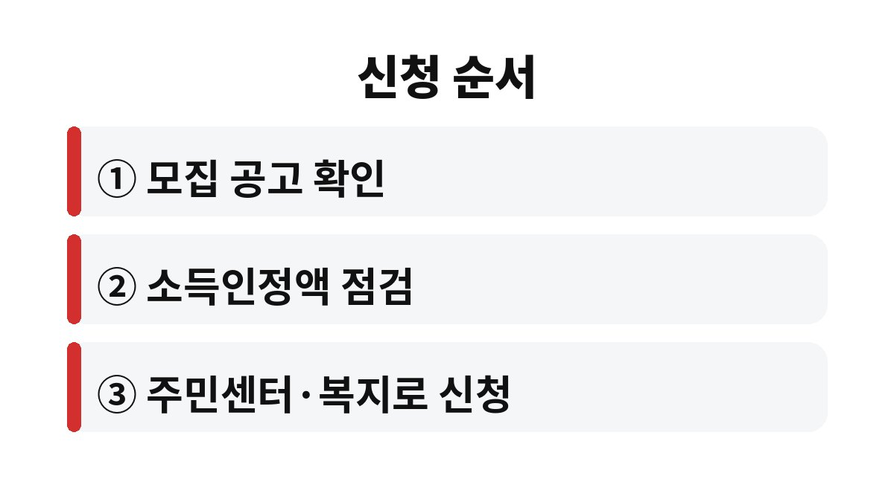

청년내일저축계좌는 만 15세 이상 39세 이하 청년 가운데 가구 소득인정액이 기준 중위소득 50% 이하이고 본인 월 근로·사업소득이 10만 원 이상이어야 가입할 수 있는 자산형성 지원사업이다.
2026년 11월 기준으로 공공기관 안내에서 확인한 나이, 소득, 저축 조건을 순서대로 정리했다.
나이만 맞으면 된다고 넘겨짚었다가 소득 단계에서 걸리는 경우가 많다.
연령 기준은 만 15세 이상 39세 이하로 안내된다.
여기까지는 쉽게 통과하지만 가구 소득인정액이 기준 중위소득 50% 이하여야 한다는 조건이 따로 있다.
본인 월급이 아니라 가구 단위로 계산한다는 점에서 부모와 함께 사는 청년이 가장 많이 헷갈린다.
월 근로·사업소득 10만 원 이상이 있어야 한다.
아르바이트로 소득이 있어도 월 10만 원에 못 미치면 조건을 채우지 못할 수 있다.
이 사업은 모집 기간을 정해 신청을 받는다.
인천광역시 청년포털에는 2026년 신청 기간이 5월 4일부터 5월 20일까지로 안내되어 있었고, 지금은 그 기간이 지났다.
가구 소득은 해마다 기준이 바뀌고 가구 상황도 달라진다.
이번에 기준을 넘었다고 해서 다음 모집에서도 같은 결과가 나온다는 보장은 없다.
반대로 이번에 가능했던 사람도 가구원이 늘거나 소득이 바뀌면 다시 계산해야 한다.
공공기관 안내에서 확인한 기준만 표로 묶었다.
정부 지원 금액은 소득 구간별로 다르게 설명하는 곳이 있어 표에서 뺐다.
표의 기준은 공공기관 안내에 적힌 숫자만 옮겼다.
소득인정액에는 월 소득뿐 아니라 재산이 일정 방식으로 환산되어 들어간다는 점도 알아 둔다.
표에서 가장 먼저 막히는 곳은 가구 소득이다.
가구원 수가 한 명 늘면 기준 금액도 달라지므로 같은 월급이어도 결과가 다르게 나올 수 있다.
나는 이 항목을 계산기보다 복지로 모의계산이나 주민센터 상담으로 확인하라고 권하고 싶다.
| 항목 | 안내된 기준 | 비고 |
|---|---|---|
| 나이 | 만 15세 이상 39세 이하 | 군 복무 등 예외는 공고 확인 |
| 가구 소득 | 소득인정액 기준 중위소득 50% 이하 | 가구원 수별 금액은 해마다 달라진다 |
| 본인 소득 | 월 근로·사업소득 10만 원 이상 | 소득 증빙 방법은 주민센터 확인 |
| 본인 저축 | 월 10만 원 이상 | 정부 지원 금액은 공고 확인 |

준비는 신청 창이 열린 뒤가 아니라 열리기 전에 해 두는 편이 낫다.
접수 기간이 2주 남짓으로 짧게 안내된 지역도 있어서 서류를 모으다가 마감이 지나기도 한다.

재산 기준, 다른 자산형성 사업과의 중복 가입 여부, 만기 조건은 안내하는 곳마다 설명이 달라서 이 글에서는 확정해서 쓰지 않는다.
예를 들어 이미 다른 청년 저축 상품에 가입한 사람이라면 중복이 허용되는지부터 주민센터에 물어야 한다.
지역마다 접수 시기가 다를 수 있다.
부모와 따로 살고 있다면 주민등록상 가구가 어떻게 잡히는지부터 확인한다.
군 복무나 휴학 같은 예외는 공고마다 적는 방식이 달라서 신청 전에 담당자에게 확인하는 수밖에 없다.
자산형성 지원은 저축을 시작한 뒤에도 매달 납입 기록이 남는 사업이라 한 번 가입하면 계획을 꾸준히 지키는 일이 남는다.
월 10만 원 이상이라는 저축 기준은 월급날 바로 이체되도록 설정해 두면 놓치기 어렵다.
다음에 할 일은 복지로에서 다음 모집 공고가 올라오는지 보는 것이다.
가구 소득 계산이 막히면 관할 행정복지센터 복지 담당자에게 가구원 정보를 들고 가서 묻는 쪽이 빠르다.
참고 자료: 인천광역시 청년포털 「청년내일저축계좌」(2026년 11월 확인)
※ 2026년 11월 기준 공개된 정보를 정리한 글이며, 정확한 대상 요건·금액·신청 기간은 복지로·정부24·관할 주민센터의 공식 공고를 확인하길 바란다.